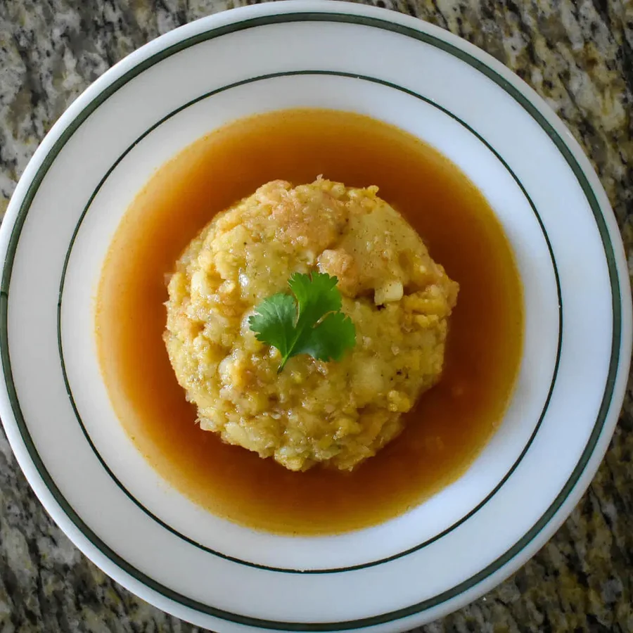

Trifongo con Caldo

Description
A fusion of Taino, Spanish, and African influences, Puerto Rican cuisine is vibrant and flavorful. Many dishes include root vegetables, rice, stewed beans, and an accompanying protein.
A popular dish is Mofongo, made with mashed fried green plantains mixed with garlic, herbs, olive oil, and pork cracklings. This recipe is a trifecta Mofongo that uses fried green plantains, yellow plantains, and yuca, or cassava root. It is sat in a bowl of a simple broth, or caldo, to help balance the richness and bring out all of the flavors.
Ingredients
Trifongo
- 1 lb. Frozen yuca chunks
- 2 sprigs fresh culantro, roughly chopped
- 1 tsp. whole black peppercorns
- 1 bay leaf
- 2 medium green plantains, chopped into pieces
- 2 medium sweet yellow plantains, chopped into pieces
- vegetable oil, for frying
- 1/2 cup garlic cloves, mashed
- kosher salt
- 2 cups prk rinds, crushed
- 4 tbsp unsalted butter, melted
- Adobo seasoning (Goya, Badia, etc.), to taste
Chicken Caldo
- 4 cups chicken broth or stock
- 1 sprig culantro
- 1 bay leaf
- 2 garlic cloves, crushed
- 1/2 tbsp whole black peppercorns
- 1/2 tbsp smoked Spanish paprika
- 1/2 cumin seeds, optional
Steps
Note: This recipe is fairly straightforward, but requies a bit of multitasking. The steps that pertain to the trifongo will be labeled with a T, and caldo steps with a C to include their specific ingredients. Have all of your ingredients readily available. Lets begin!
- T: In a large pot, add the yuca, chopped culantro, garlic cloves and bay leaf and bring to a boil. Cook until fork tender, drain, discard the herbs and spices and set aside in a large mixing bowl.
- C: While the yuca is boiling, work on the caldo by combining the chicken broth, culantro sprig, bay leaf, garlic cloves, peppercorns, paprika, and cumin seeds in a medium saucepan. Bring to a gentle boil and cook for 15-20 minutes. Strain out and discard the herbs and spices and reduce the heat to low to keep warm.
- Add oil to a frying pan and fry the yellow plantains over medium heat until golden brown on both sides. Place into the large mixing bowl.
- Next fry the green plantains until golden and place in the large mixing bowl.
- T: When the yuca, green plantains, and yellow plantains are in the bowl together, add a large pinch of salt, the crushed pork rinds, mashed garlic cloves, and the melted butter. Using a potato masher, work all ingredients into a mass. Season with adobo and more salt to your liking.
- Using a small teacup or with your hands (authentic way), shape the trifongo mass and place in a soup bowl.
- Finally, ladle a cup of the warm broth over the trifongo, serve and enjoy!